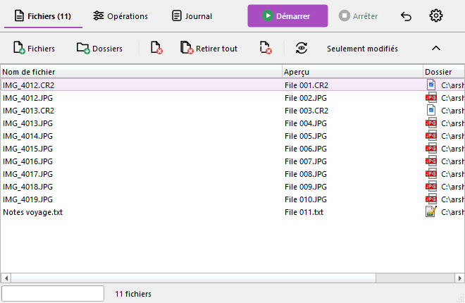
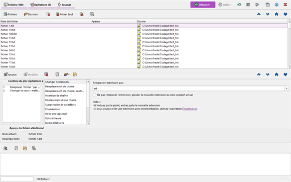
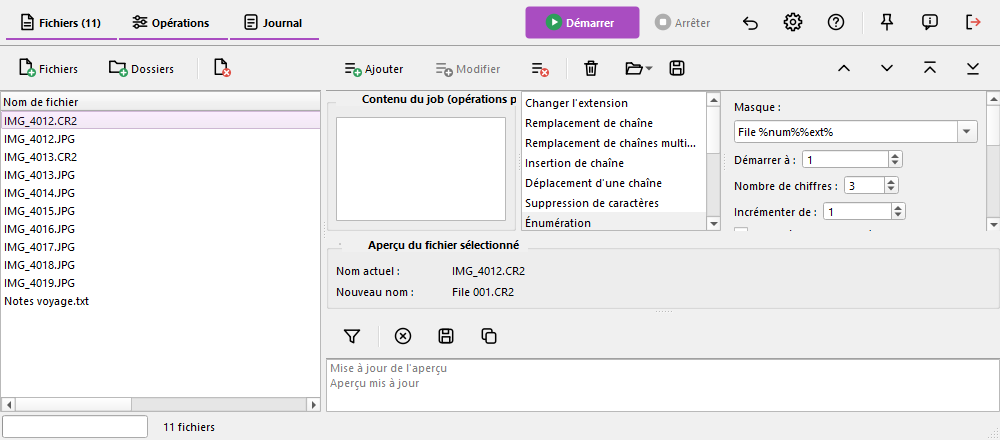

« Actualiser l'aperçu » (F5). Les colonnes peuvent toujours être affichées, masquées, déplacées et redimensionnées
depuis le menu des en-têtes.
« Actualiser l'aperçu » (F5). Les colonnes peuvent toujours être affichées, masquées, déplacées et redimensionnées
depuis le menu des en-têtes.Ce chapitre est propre à Ant Renamer Qt. En plus de la disposition classique décrite dans le reste de cette aide, le programme peut afficher sa fenêtre principale avec une disposition moderne : les mêmes fonctions et le même moteur de renommage, avec une autre présentation. La disposition classique reste celle par défaut.
Ouvrez la fenêtre des options, page Affichage :
Les changements sont pris en compte au prochain démarrage du programme. La disposition moderne garde sa propre taille de fenêtre, ses largeurs de colonnes et la position de ses séparateurs : la disposition classique n'est pas affectée, vous pouvez y revenir à tout moment.
La barre principale, en haut de la fenêtre, contient les trois boutons de pages (Fichiers, Opérations, Journal), qui indiquent le nombre de fichiers de la liste et le nombre d'opérations planifiées, par exemple « Fichiers (100) » et « Opérations (2) ». À droite se trouvent le bouton Démarrer (le seul en couleur), Arrêter, Annuler, Options, Aide, Toujours au premier plan, À propos et Quitter.
Les autres boutons ne sont plus dans la barre principale : chaque page a sa propre barre d'outils fine, en haut de la page (ajout et retrait de fichiers pour la page Fichiers, les commandes du job pour la page Opérations, le filtre et les commandes du journal pour la page Journal). Les boutons qui déplacent les éléments sont à droite des barres des pages Fichiers et Opérations. Les barres d'outils de la disposition moderne ne sont pas déplaçables. Les raccourcis clavier sont les mêmes que dans la disposition classique.
Une page à la fois, comme dans la disposition classique, avec le nouveau style.

Les trois pages sont affichées ensemble, les unes au-dessus des autres : les fichiers en haut, les opérations au milieu, le journal en bas.

Les fichiers à gauche, les opérations à droite au-dessus du journal. Cette disposition convient aux écrans larges.

Dans les deux dispositions en écran unique :
La liste affiche le nom actuel, le nouveau nom (colonne Aperçu) et le dossier. La colonne Aperçu est visible par défaut ; comme dans la disposition classique, elle est
remplie par le bouton « Actualiser l'aperçu » (F5). Les colonnes peuvent toujours être affichées, masquées, déplacées et redimensionnées
depuis le menu des en-têtes.
Dans la disposition classique, une opération ne peut plus être modifiée après avoir été ajoutée au job. Dans la disposition moderne, c'est possible, pour tous les types d'opérations :
Le bouton Modifier fonctionne aussi sans le double-clic : il remplace l'opération sélectionnée de la liste par les réglages qui sont actuellement dans l'éditeur. La barre de modification disparaît d'elle-même si l'opération est retirée ou déplacée entre-temps.